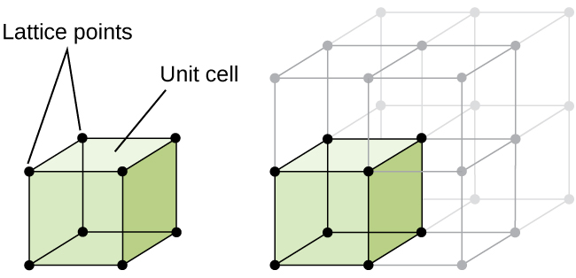
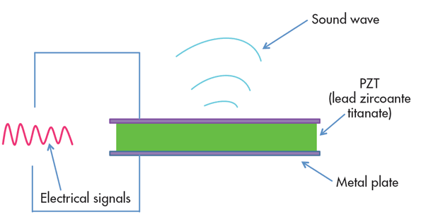

Piezo what? It sounds like a lot to take in, but it’s simple to understand. The word piezoelectric originates from the Greek word piezein, which literally means to squeeze or press. Instead of squeezing grapes to make wine, we’re squeezing crystals to make an electric current! Piezoelectricity is found in a ton of everyday electronic devices, from quartz watches to speakers and microphones. In a nutshell:
Piezoelectricity is the process of using crystals to convert mechanical energy into electrical energy, or vice versa.
Regular crystals are defined by their organized and repeating structure of atoms that are held together by bonds, this is called a unit cell. Most crystals, such as iron have a symmetrical unit cell, which makes them useless for piezoelectric purposes.
There are other crystals that get lumped together as piezoelectric materials. The structure in these crystals aren’t symmetrical but they still exist in an electrically neutral balance. However, if you apply mechanical pressure to a piezoelectric crystal, the structure deforms, atoms get pushed around, and suddenly you have a crystal that can conduct an electrical current. If you take the same piezoelectric crystal and apply an electric current to it, the crystal will expand and contract, converting electrical energy into mechanical energy.
There are a variety of piezoelectric materials that can conduct an electric current, both man-made and natural. The most well known, and the first piezoelectric material used in electronic devices is the quartz crystal. Other naturally occurring piezoelectric materials include cane sugar, Rochelle salt, topaz, tourmaline, and even bone.
Quartz-crystalAs piezoelectric technology started to take off after World War I we began developing man-made materials to rival the performance of quartz. Man-made piezoelectric materials include:
PZT is made from lead zirconate titanate and can produce more voltage than quartz with the same amount of mechanical pressure.
PZT-piezo-ceramicsPZT piezo ceramics used in ultrasonic sensors.
Barium Titanate.Barium Titanate is a ceramic piezoelectric material that was discovered during World War II and is known for its long lasting durability.
Lithium NiobateLithium Niobate is a material that combines oxygen, lithium, and nobium together in a ceramic material that performs similar to barium titanate.
We have specific materials that are suited for piezoelectricity applications, but how exactly does the process work? With the Piezoelectric Effect. The most unique trait of this effect is that it works two ways. You can apply mechanical energy or electrical energy to the same piezoelectric material and get an opposite result.
Applying mechanical energy to a crystal is called a direct piezoelectric effect and works like this:
That’s it, a simple application of mechanical pressure, the squeezing of a crystal and suddenly you have an electric current. You can also do the opposite, applying an electrical signal to a material as an inverse piezoelectric effect. It works like this:
The inverse piezoelectric effect is used in a variety of applications. Take a speaker for example, which applies a voltage to a piezoelectric ceramic, causing the material to vibrate the air as sound waves.
 IMAGE SOURCE